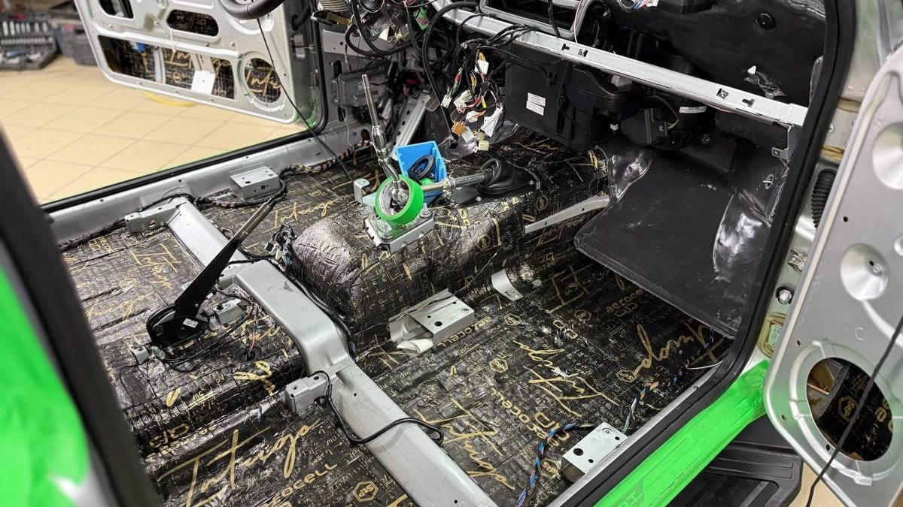

На витрине три коробки StarLine, и на всех почти одно и то же: буквы, цифры, «2CAN+2LIN», «BT», «GSM», «v2». Продавец говорит, что все с автозапуском и все хорошие, разница «в функциях». Вы киваете, а сами не понимаете, за что доплачивать и не останется ли через год ощущение, что взяли не то.
Сигнализация Старлайн с автозапуском выбирается по трём вопросам: где ночует машина, чем вы хотите управлять – брелоком или телефоном, и что поддерживает именно ваша модель авто. Ниже расшифруем буквы на коробке, сравним A93, S96 и S96 v2 и разберём, когда нужен GSM, а когда хватит брелока.

Как читать название на коробке
Сигнализация StarLine называется длинно, но каждая часть что-то значит. Разберём по кусочкам.
- Буква и цифры модели (A93, S96) – серия и поколение. От них зависят возможности центрального блока и то, как система управляется: в первую очередь брелоком или в первую очередь смартфоном.
- CAN и LIN. Это цифровые шины машины. Через CAN блок читает двери, капот, обороты и управляет замками, через LIN на многих моделях работают штатные кнопки и иммобилайзер. Цифра перед буквами – сколько шин система умеет слушать одновременно. На современных машинах их бывает несколько, и блоку нужно достать до всех.
- BT – Bluetooth. Смартфон или метка рядом с машиной работают как ключ: машина понимает, что вы рядом, и не даёт уехать без вас.
- GSM – модуль связи с сим-картой. Через него работает приложение: запуск и охрана из любой точки, где есть сеть.
- GPS – приёмник координат. Приложение показывает, где стоит машина, и ведёт историю поездок.
- v2 – обновлённое поколение модели с переработанной электроникой.
Отсюда первое правило: сравнивайте конкретные исполнения, а не серии целиком. A93 с GSM и S96 без GSM решают разные задачи, хотя вторая модель старше по серии.
StarLine A93: брелок в центре
StarLine A93 – классика для тех, кто привык управлять машиной с брелока. В комплекте брелок с экраном: он показывает, закрыта ли машина, работает ли двигатель, какая температура, и пищит при тревоге. Команды идут диалоговым кодом с индивидуальными ключами шифрования, поэтому перехватить и повторить их кодграббером не выйдет.
Кому подходит: машина ночует под окном или в пределах видимости с балкона, вы спускаетесь к ней сами и хотите видеть статус на брелоке без телефона. Автозапуск по температуре, будильнику и напряжению аккумулятора здесь есть.
Слабое место – дальность. В панельных дворах она заметно меньше заявленной: бетон, соседние дома, чужие сигналы. Если машина стоит за углом дома, брелок может не достать, и тогда нужен GSM.
StarLine S96 и S96 v2: смартфон в центре
StarLine S96 строится вокруг телефона и метки. Смартфон по Bluetooth работает как ключ, метка в кармане разрешает поездку, а приложение через GSM даёт полный контроль: запуск, охрана, температура в салоне, напряжение, при наличии GPS – местоположение. Шин в блоке больше, чем у A93, поэтому S96 подключают к машинам, где электроника сложнее.
StarLine S96 v2 – следующее поколение той же серии. Логика та же, но электроника переработана, и выбор исполнений под связь и навигацию шире. Если выбираете между S96 и S96 v2 на новую машину, спросите у мастера, какая из них поддерживает вашу модель полнее: иногда это решает вопрос без споров о функциях.
Кому подходит S96: машина стоит далеко от окон, вы хотите управлять с телефона, видеть машину на карте и пользоваться меткой вместо брелока. Слабое место – зависимость от связи: в подземном паркинге или там, где сеть ловит плохо, приложение будет отвечать с задержкой или не ответит.

StarLine GSM: когда без него не обойтись
StarLine GSM – это не отдельная модель, а возможность управлять машиной через сотовую сеть. У одних систем модуль встроен в исполнение с пометкой GSM в названии, к другим его можно добавить отдельно.
GSM нужен, если:
- машина ночует за домом, на стоянке через дорогу или у работы за забором;
- вы ездите на дачу и хотите прогреть машину, пока собираете вещи;
- машиной пользуется ещё кто-то из семьи, и вам важно видеть, где она;
- хочется получать тревогу на телефон, а не только на брелок, который лежит в куртке в прихожей.
Не нужен, если машина всегда под окном, а приложение вы открывать не будете. Тогда хватит брелока с экраном, а сэкономленное разумнее вложить в метку и лишнюю блокировку.
Брелок StarLine: что нужно знать заранее
Брелок StarLine с экраном – вещь удобная, но зимой к нему есть пара вопросов. На морозе батарейка садится быстрее, а дальность падает. Держите запасную батарейку дома и не оставляйте брелок на ночь в холодной машине.
Если брелок потерялся или разбился, новый привязывают к системе по процедуре, для неё нужен сервисный код с пластиковой карточки владельца. Эту карточку из коробки храните дома, а не в бардачке: без неё перепривязка сложнее, а вору в бардачке она ни к чему.
На системах с меткой и смартфоном брелок можно вообще не носить, но один экземпляр в доме стоит держать, если телефон сел на морозе.
Установка сигнализации Старлайн: что зависит от мастера
Установка сигнализации Старлайн решает не меньше, чем модель. Одна и та же S96 в руках двух мастеров защищает по-разному.
- Совместимость. У производителя есть справочник поддерживаемых машин с картами подключения по каждой модели и году. Мастер проверяет вашу машину по нему до покупки, а не после.
- Обход иммобилайзера. Бесключевой, через шину, без ключа в салоне. Если на вашу модель такого нет, обсудите варианты до начала работ.
- Место блока и блокировок. Не бардачок и не ниша под рулём. Несколько точек блокировки в разных местах.
- Проводка. Пайка, оплётка под штатную, никаких скруток.
- Настройка. Автозапуск по температуре и напряжению, сервисный режим, длина прогрева под вашу машину. Попросите показать, как всё это меняется из приложения или с брелока.
Ошибки при выборе, которые видно только зимой
- Взять старшую модель «на вырост» и не пользоваться ей. Если приложение так и не установлено, а метка лежит в ящике, вы заплатили за возможности, которые не работают на вас.
- Взять младшую модель для машины, которая стоит далеко. Брелок без связи с машиной превращает автозапуск в лотерею: в морозное утро вы всё равно идёте во двор проверять.
- Не учесть, где пропадает связь. Подземный паркинг у дома или стоянка в низине у реки – места, где GSM может отвечать с задержкой. Проверьте связь телефоном там, где ночует машина, ещё до покупки.
- Купить коробку в одном месте, а ставить в другом. Мастер может обнаружить, что выбранное исполнение не поддерживает вашу модель полностью, и коробку придётся менять. Сейчас, когда на дорогах всё больше новых китайских моделей, это не редкость: поддержка свежих моделей у систем появляется не сразу.
Частые вопросы
A93 или S96 – что брать на машину во дворе? Если машина под окном и вам хватает брелока, A93. Если стоит далеко, хотите телефон, метку и карту, S96 или S96 v2 с GSM.
Можно ли потом добавить GSM к уже стоящей системе? На ряде моделей можно доустановить модуль. Уточните у мастера по вашей конкретной системе, потому что это зависит от исполнения.
Сигнализация Старлайн с автозапуском на механике работает? Да, через программную нейтраль: перед выходом вы оставляете мотор на нейтрали с ручником, ставите в охрану, и система запоминает, что передача выключена.
Что делать, если не работает брелок StarLine? Сначала поменять батарейку, потом проверить, не стоит ли система в сервисном режиме. Если не помогло, брелок перепривязывают по процедуре с кодом из карточки владельца.
Сколько стоит установка с автозапуском? Цена складывается из исполнения системы (GSM, GPS, метка), обхода иммобилайзера, числа блокировок и сложности разборки вашей машины. Поэтому её называют после осмотра.
Где поставить StarLine в Ярославле
Студия «Звук на Волге», Ярославль, проспект Октября, 82б. Работаем пн–пт с 8:30 до 20:00, сб–вс с 10:00 до 19:00. StarLine – одна из марок, с которыми мы работаем: подберём исполнение под вашу машину и место, где она ночует, поставим с автозапуском и приложением, настроим. Для нового автомобиля можно не переживать за дилерскую гарантию: у студии есть необходимые сертификаты. После установки можно приехать поменять настройки или задать вопрос.
Узнать, какая StarLine подойдёт вашей машине: охранные системы с установкой в Ярославле. Телефон +7 902 220-75-55, сообщения в ВК: vk.me/avtostil_yaroslavl.
Раньше студия работала под именем «Автостиль». Название сменили, когда поняли, что главное в нас – звук и город: теперь мы «Звук на Волге». Адрес тот же.